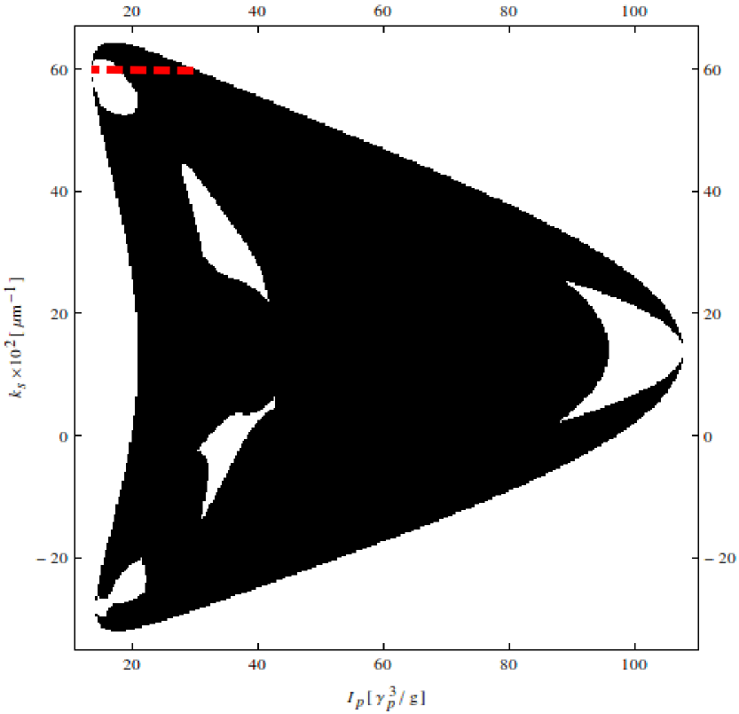
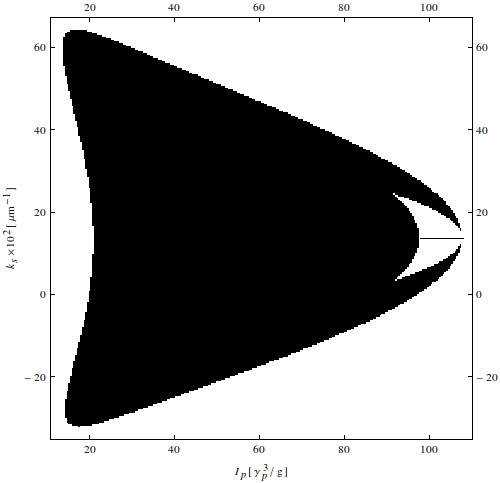
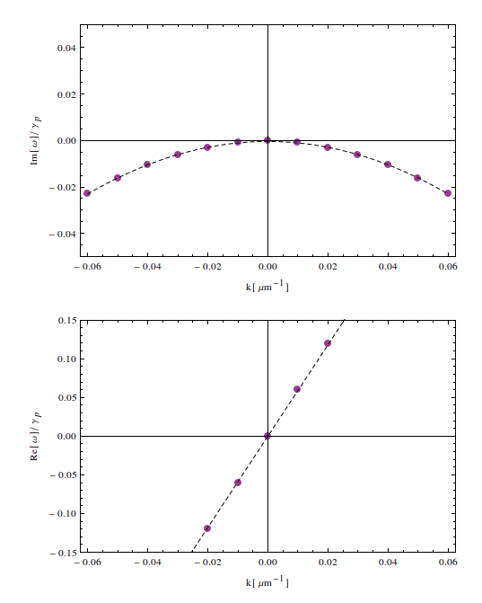
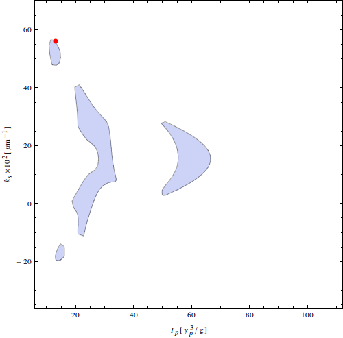
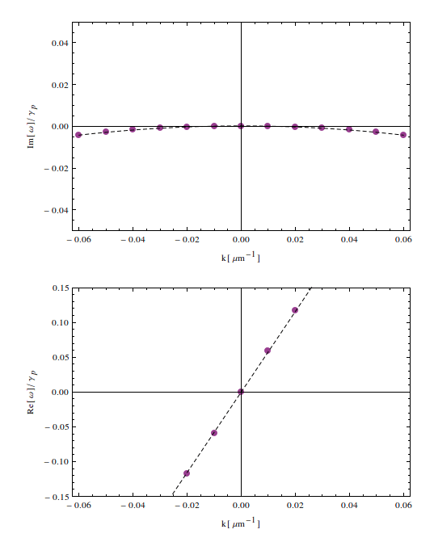
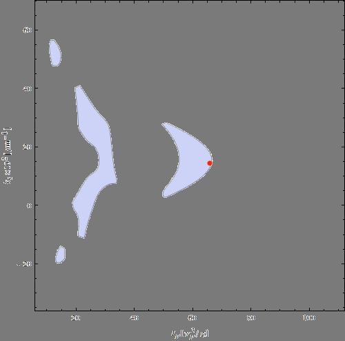
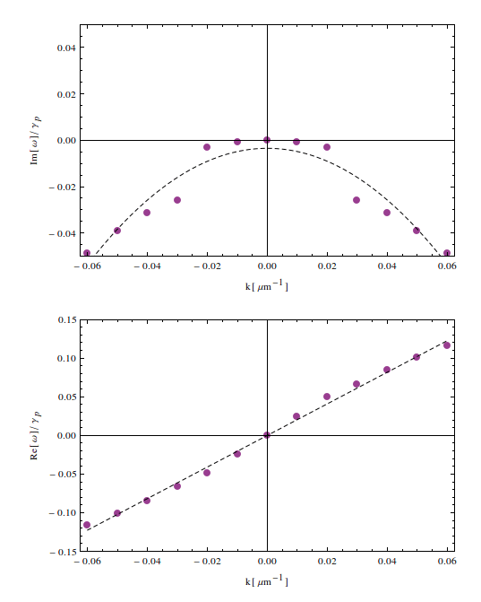
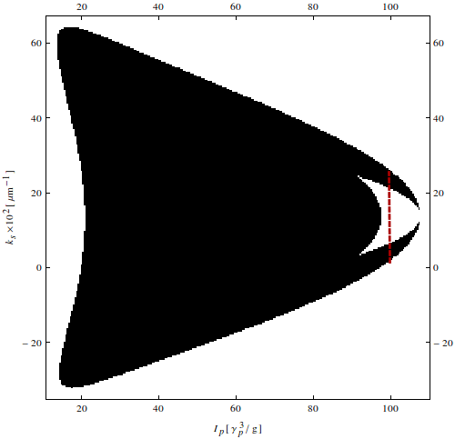
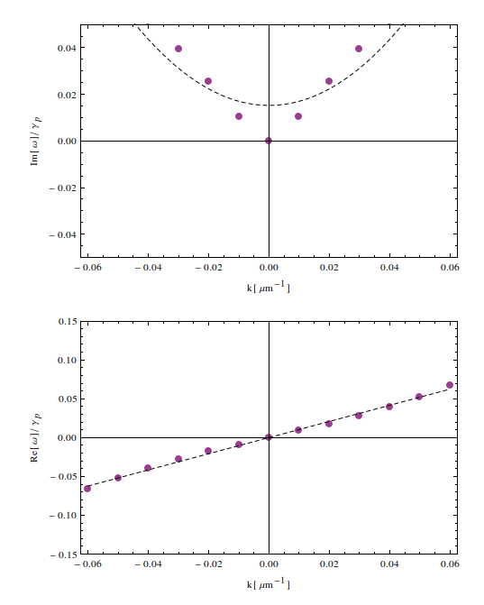

Optical Parametric Oscillator
Unpublished results
berceanu@runbox.com
Types of instabilities
Low pump powers

High pump powers

Goldstone mode evolution
Varying the pump power

Varying the pump momentum
small ks
 
large ks
 
Varying the signal momentum
 